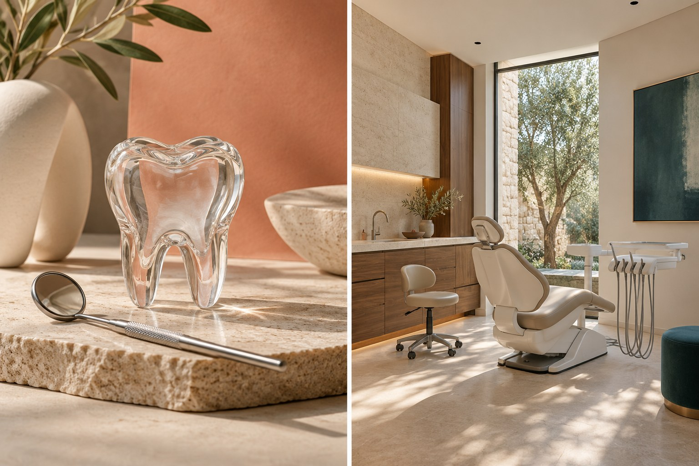
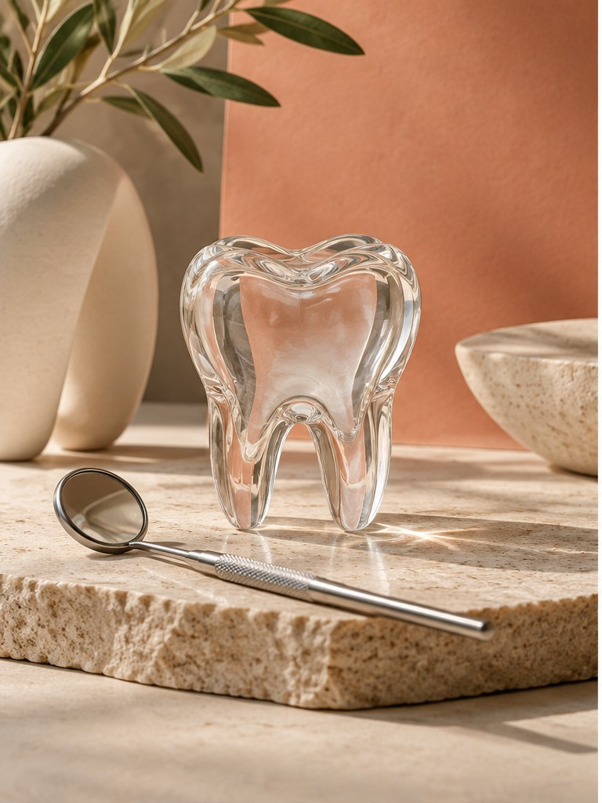
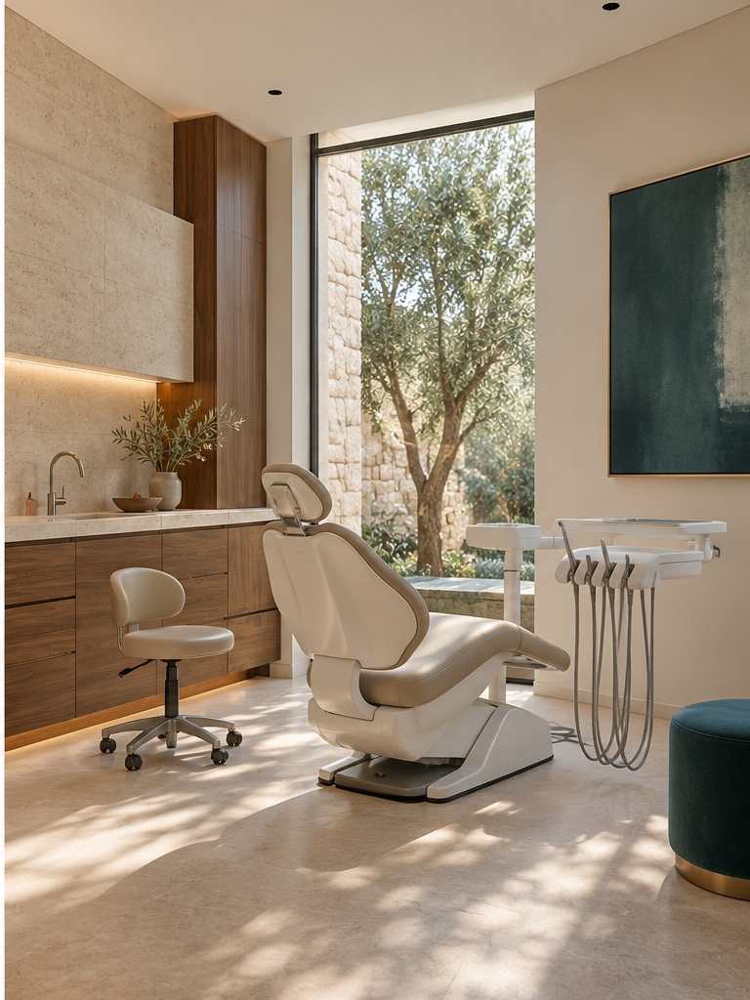

Diş sağlığına dair bilgi, tek bir yerde.
Kliniğin yayımladığı hizmet başlıklarını, hekim listesini ve ziyaret bilgilerini kolayca bulabileceğiniz sakin ve açık bir dijital karşılama.

Aradığınız alanı kolayca bulun.
Bu bölümde yalnızca Maraş Dent’in kendi sitesinde yayımladığı hizmet adları yer alır. Tedavi kapsamı ve kişiye özel bilgi için klinik ekibine danışın.

Önemli bilgiler, gözden kaçmadan.
Maraş Dent’in mevcut web sitesinde klinik tanıtımı, hizmet başlıkları, hekim listesi ve ziyaret bilgileri yayımlanıyor. Bu konsept, bu bilgileri daha okunaklı bir sırada bir araya getiren yeni bir dijital karşılama fikridir.
Klinik açıklamaları, ekip bilgileri ve görseller canlı kullanımdan önce Maraş Dent tarafından güncellenmeli ve onaylanmalıdır.
Hekim kadrosu
Aşağıdaki ad ve unvanlar Maraş Dent’in herkese açık hekimler sayfasında yayımlandığı biçimde aktarılmıştır. Liste güncelliği klinik tarafından teyit edilmelidir.
Hekim isimleri ve görevleri kliniğin herkese açık sayfasından alınmıştır; güncel çalışma durumu veya özgeçmiş bilgisi eklenmemiştir.
Bilgi net değilse, bunu da açıkça söyleyelim.
Bu konseptte yalnızca kliniğin herkese açık sayfalarında doğrulanabilen bilgiler var. Ayrıntısı yayımlanmayan noktaları tahminle doldurmadık.
Hizmet başlıkları tedavi ayrıntılarını da anlatıyor mu?
Maraş Dent’in yayımladığı sayfalarda hizmet adları listeleniyor; bu başlıkların kapsamı, kişiye uygunluğu veya süreç ayrıntısı bu konseptte açıklanmıyor. Bu nedenle hizmet adlarını açıklama gibi genişletmedik.
Hekimlerin özgeçmişleri veya uzmanlık alanları var mı?
Herkese açık hekimler sayfasında adlar ve görevler yer alıyor. Ayrıntılı özgeçmiş ya da uzmanlık profili bilgisi burada doğrulanmadı; demoda bu yönde iddia bulunmuyor.
Randevu nasıl planlanıyor?
Kliniğin iletişim sayfasında bir iletişim formu bulunuyor; bu konsept form göndermez ve randevu oluşturmaz. Formu ve güncel iletişim seçeneklerini görmek için Maraş Dent’in iletişim sayfasını açabilirsiniz.
Telefon numaralarını arama bağlantısı olarak neden eklemediniz?
Kliniğin kendi sayfasında bu numaraların yanında geçici altyapı sorununa ilişkin bir not yer alıyor. Güncel kullanılabilirliği doğrulayamadığımız için numaraları tıklanabilir arama düğmesine çevirmedik.
Fotoğraflar Maraş Dent’in kliniğinden mi?
Hayır. Bu sayfadaki görseller konsept için üretilmiş temsili çalışmalardır; kliniği, ekibi, ekipmanı veya gerçek bir tedavi sürecini göstermez. Gerçek yayında kullanılacak görseller klinik tarafından sağlanmalı ve onaylanmalıdır.
Yola çıkmadan önce bilgileri kontrol edin.
Adres, e-posta ve çalışma saatleri Maraş Dent’in kendi iletişim sayfasında yayımlanmıştır. Telefon numaraları için sayfada geçici altyapı notu bulunduğundan burada arama bağlantısı oluşturulmamıştır.
Telefon bilgisi: Kliniğin kendi sitesinde 0 (532) 242 89 59 ve 0 (543) 416 75 80 numaraları, “altyapı sorunlarından dolayı geçici süre bu numaralarımız aktif” notuyla yayımlanıyor. Bu nedenle konseptte numaralar tıklanabilir arama butonu değildir; güncel kanal için klinikten teyit alın.
